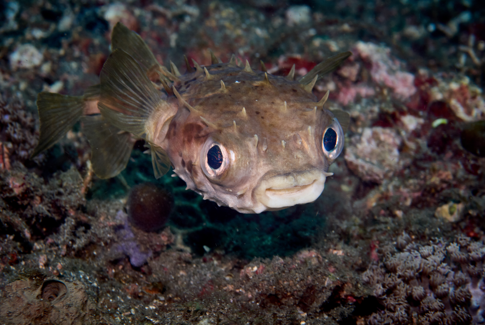
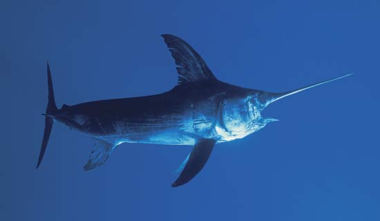
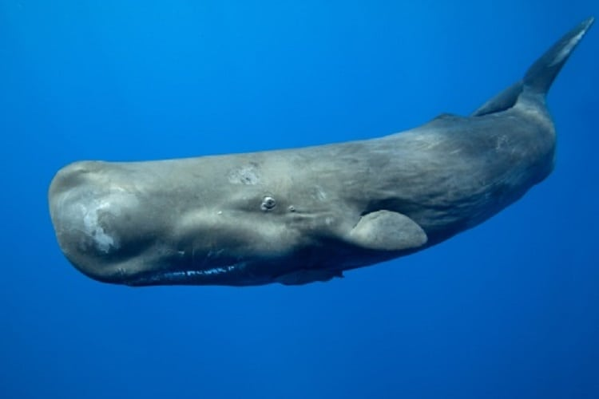
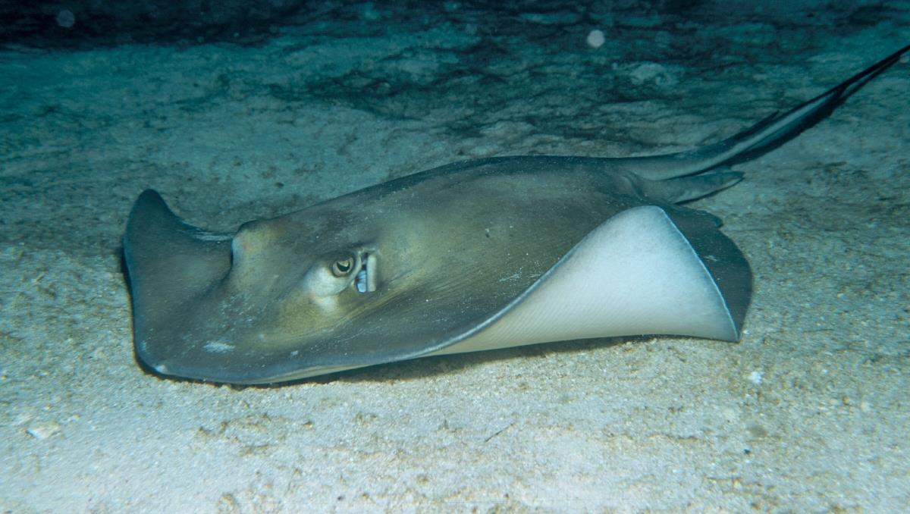

The Epipelagic (Sunlight) zone is known as the surface layer or the sunlight zone of the ocean ranging from the surface to 656 feet. There is plenty of light and heat within this layer although both decrease as the depth increases. Pressure is also minimal and increases with depth. Most oceanic life and human activities like leisure, fishing, and sea transport occur in the Epipelagic zone. The coral reefs can be found in the layer and the photosynthesis process occurs here.
Above the Bathypelagic zone lies the Mesopelagic layer (Twilight or midwater zone). The Mesopelagic zone lies between 656 feet and 3,281 feet. The zone is home to some of the strangest sea animals like the swordfish and the wolf eel. Faint sun rays penetrate the layer.
The Bathypelagic layer (Midnight Zone) is found between 3,281 feet and 12,124 feet just above the Abyss. This layer is also called the midnight or the dark zone. Although the Bathypelagic zone is dark, visible light may be observed from sea creatures found here. The pressure in the zone reaches 5,858 lbs for every square inch, and a huge number of different sea species are found in the layer. Many animals in this layer are either black or red thanks to low sunlight penetration. Some whale species, like the sperm whale, spend some time at this level in search of food.
The Abyssopelagic zone, also known as the Abyss or Abyssal zone, lies just above the hadalpelagic layer between 13,124 feet and 19,686 feet. The layer’s name has origins in the Greek language and loosely translates to “no bottom.” Just like the layer below it, temperatures are near freezing point, and there is no penetration of natural light. Pressure is also high due to the weight of the water above. Invertebrates like sea stars and squids can survive in this environment. Over 75% of the ocean floor lies can be found within this zone with the continental rise starting here.
